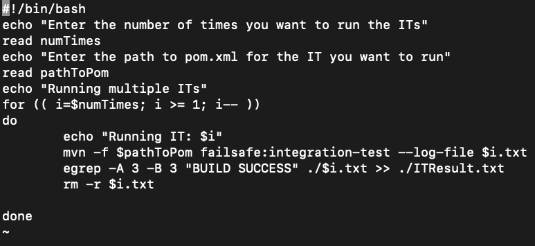

Wonders of shell scripting.
I came across a problem while working as a developer. We had written some dockerized integration test cases for a microservice which had to compute some logic on a query and then send the result to a topic in kafka. A mock service was written to consume this message from the topic. Test Containers were used to write these tests, which provides lightweight containers for you to run these tests.
This particular service seemed to be working perfectly but one out of 10 times, these IT test cases seemed to fail for some reason. It could be a real problem in the service, or how the consumer/producer code was written for kafka in these dockerized ITs or just timeouts. We don’t need to get into the details of what was happening but the interesting point is the first line in this paragraph. It only seemed to fail 1 out of 10 times. Now, as a developer, how would you even get that number? Do you run the IT plugin (we were using maven as our dependency management tool), wait for 10 mins staring at the screen to look for the failure (or success?) and then run it again? Point to note: In success cases, this scenario did take 10 mins from the time ryuk brought up our test containers to the killing of these containers after one run.
I’m telling you all this to give a simple example on how shell scripting maybe useful to automate such menial tasks. As a new developer trying to learn, I came up with the below .sh file. More experienced developers may find shorter or cleaner code, but you get the idea!
This script would run the IT test cases, store the result in a file and use that file to grep (nothing but string search) the lines where it showed success and the time taken for it to run (notice -A and -B flags, indicating fetch me 3 lines after and 3 lines before the grepped string. It would store this in a file named ITResult.txt, and then delete the temporary file.
Now imagine another scenario where you have a log file. The support team has told you there is some issue with a certain microservice that you own. What is the first place to look? Logs. If logging has been done properly, it can be a source of rich information to debug the issue.
Let's say the line you think that will take you to the issue is "Deleting the document..". You have logged this line whenever you delete a certain document from a NoSQL database (like Elasticsearch). You want to check how many times (or how many documents were deleted). Just make use of grep again!
Your id was between '[' and ']', so you made use of cut, sorted the results based on id, took the unique ids and then you got the count of the deleted ids.
There are lots of things you can achieve by learning only a few linux commands. And as a good developer, you might be expected to know how to use them.
Want to see all the running processes?
ps -ef | grep kafka
Above command will give you the process id, process name and many other things. Want to kill the process? Take the id:
kill -9 process_id
In the above, number 9 denotes the kill signal SIGKILL (9). But be careful while using 9 to kill the process. Removing 9 and just using kill will result in graceful termination of the process. Without sigkill, a process is only killed if the signal is not handled or caught.
Want to see the space in the current directory in human readable format?
du -sh *
The number of commands and the ways in which you can use them is huge. But the idea of this small article is that a good software developer should be aware of atleast the basic linux commands and how to use them in scripts, no matter your area of expertise (be it Java, Python, devOps,..). These days all tech giants tend to use some form of Kubernetes (EKS, or self-managed?) or Openshift as their container management platform. The base OS in these clusters is generally some flavor of unix/linux. So knowing your way around these can help you with the job. Hope this tiny article motivated you to learn a bit of scripting and linux commands. It really does come in handy!!